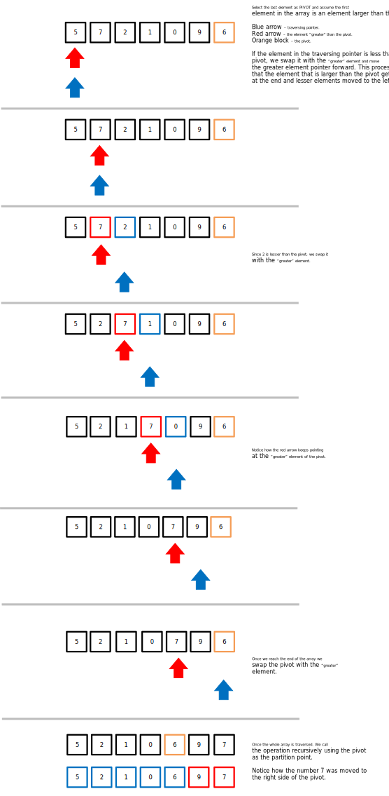
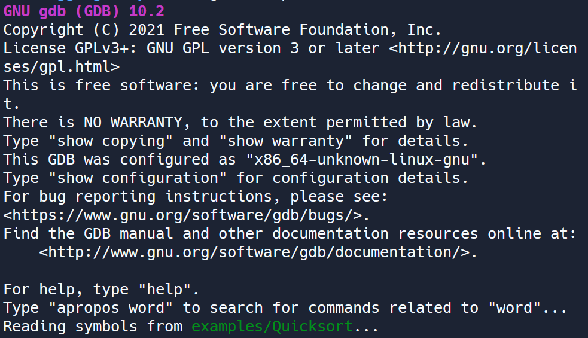

Step 1 - Finding the problem (Part 3)
Debuggers
Debugging code is such a widespread, common problem that people have built entire programs designed to help other programmers debug more efficiently. These are suitably named debuggers, and there are plenty of debuggers that work for the C programming language. Let’s take a look at gdb, a common debugger used with the command line.
For our examples, we will make use of the Quicksort algorithm.
Quicksort is an algorithm that sorts an array by first selecting an element in the array as a pivot.
Next, the elements are organized based on one of the following conditions:
- Elements lower than the pivot.
- Elements greater than the pivot.
When the sorting is done, the same process is recursively called in the upper and lower partitions of the array, taking the pivot as the middle point.
Our version of quicksort assumes the leftmost element is the “greater” element and the rightmost element is the pivot within the partition.
|  |
|---|
| Figure 1: Quicksort using the rightmost element as the pivot and assuming the leftmost element is the “greater” element. |
GDB (GNU Project Debugger) is a powerful debugger that lets you debug programs from the command line, which is useful in cases where you don’t have access to a GUI (Graphical User Interface).
It is important to understand how the program works to do effective debugging. Our ‘quicksort’ implementation runs a recursive implementation of quicksort and performs the sorting if the current element is less than the pivot, and assuming the first element is the “greater” element. The sorting itself occurs in the partition function.
Steps to debugging with GDB
Compile the program
- Open the Shell tab and compile the program:
make Quicksort
When the program is compiled, the flags: -g and -Og are used. The first one tells the compiler to add debugging information, meaning that without that flag, gdb would not be able to debug the program. The second tells the compiler to optimize the program in a way that wouldn’t affect the program’s run structure. Without -Og, the compiler could potentially optimize away some of your code, so a debugger would not be nearly as effective.
It is important to keep note of the second flag. For debugging, you should ALWAYS make sure the compiler makes minimal optimizations to your code because optimizations could drastically change how the code is run!
Run the program
-
Type the command
gdb examples/Quicksort. This will open the GDB command line interface. To debug a program withgdbyou can usegdb <name of program>. -
Make sure that GDB says that it is
Reading symbols from ./examples/Quicksort..., otherwise you didn’t attach the program to GDB. -
You can exit GDB by entering the command
quit(or any of its prefixes:qworks) as if it were the normal shell command line.
You should see something like this:
|  |
|---|
| Figure 2: Running GDB on ‘Quicksort’ file. |
Debug the program
To debug the program, we need to run it from GDB.
- Enter the command
run(orr). This will execute the program as if you’d run it from the normal command line.
(gdb) run
The program first prints the contents of the array to be sorted: an array of unordered numbers. Next, it runs the sort algorithm, and finally, prints out the array sorted array. You can see how the array is shifted during the sort!
However, it seems that the sorting is not happening as intended.
Let’s use one of the most important tools debuggers offer: breakpoints. A breakpoint tells the debugger to pause the program whenever it reaches that line of code as it is executing. This enables you to take a look at what is happening within the program in real-time. Note that the debugger does not run the line of code the breakpoint is on until after you continue executing the program.
First let’s identify where all of the element sorting takes place. Do you know where the sorting is happening?
- Place a breakpoint where the sorting takes place using the syntax
break <filename:line>.
-
Run the program with
runand observe how the program halts when it reaches the breakpoint. -
While the program is paused, you can see the values of variables. Test out some
printstatements to evaluate expressions. Here’s an example of how to use print statements:
# you can print out the value of a variable
print myVariable
# you can create more elaborate print statements by using entire expressions
print myVariable + 2
-
You can manually step through your code by calling
next(orn), which will tell the debugger to advance to the next line of code without jumping into a function call. -
The
stepcommand will move the debugger to the first line of code in a function call.
You need to find the faulty variables that cause your program to not work as expected. Try and see if you can spot the problem!
Note that all debuggers should have the same basic concepts: they allow you to step through your code as it runs, in real-time. You should almost always use debuggers over print statements. You won’t regret it!
GDB Commands
There are plenty of commands GDB offers. This table summarizes some useful ones, but we also recommend using this GDB Reference Sheet to see more commands you can use.
| Command | What It Does |
|---|---|
gdb <name of program> |
Runs/loads the program with GDB |
run or r |
Runs the loaded executable program |
quit or q |
Exits GDB |
break <filename:line> |
Create a breakpoint at the specified file and line number |
print <variable name> or print <expression> |
Print the value of an expression which can contain variable names and constants |
next or n |
Advance to the next line of code without jumping into a function call |
step |
Move to the first line of code in a function call |
continue or c |
Continue running your code until the next breakpoint |
delete <breakpoint #> or d <breakpoint #> |
Delete a breakpoint at line number # |
backtrace or bt |
Print a stack trace, or which functions were called to get to the line of code the program is halted on |